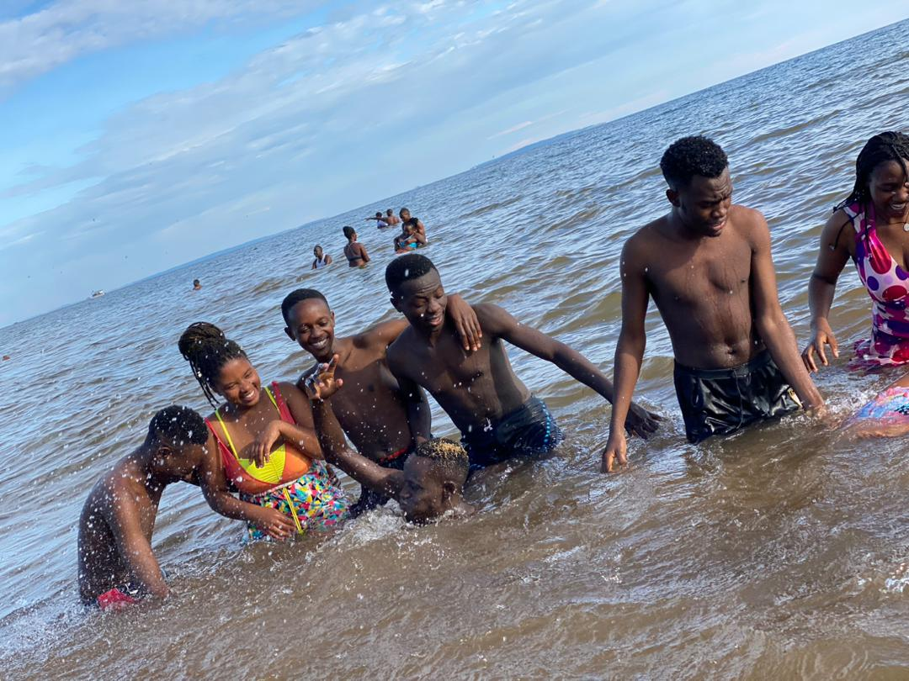
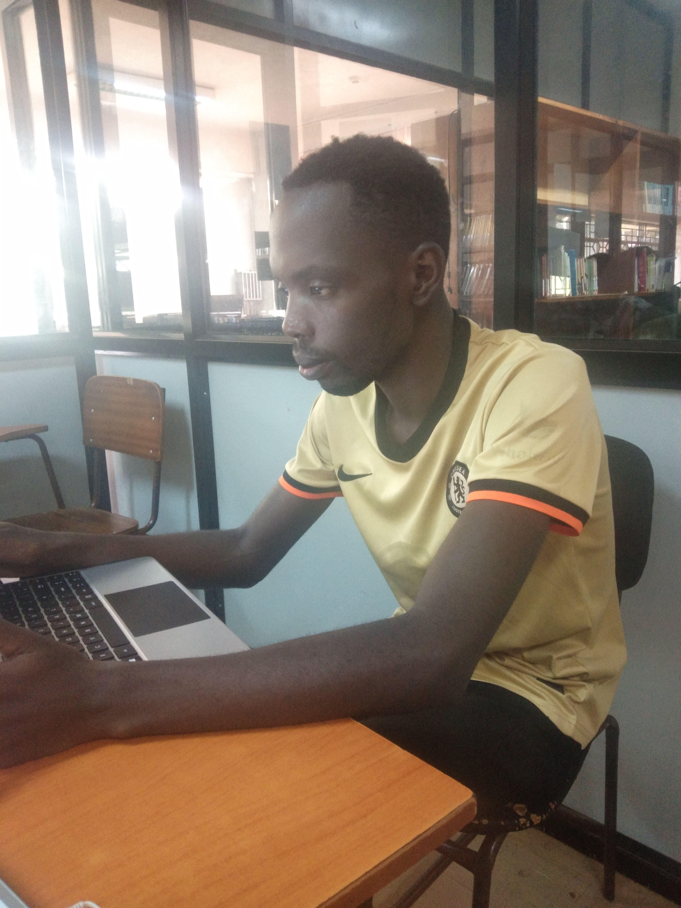
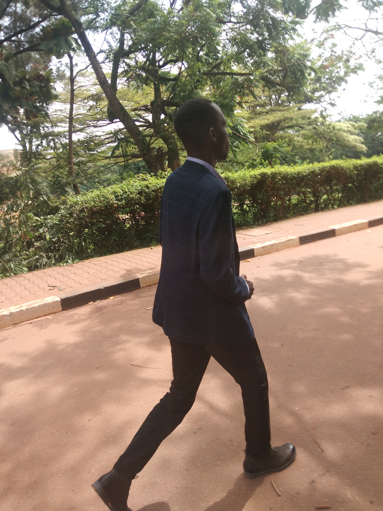

Football is one of my favorite hobbies. I enjoy playing and watching matches with friends. Here's a photo of me playing:

Swimming is a great way to stay fit and cool off in the hot weather. I like to go swimming at the local pool or beach. Here's a photo of me swimming:
Reading is a great way to relax and learn new things. I like to read fiction and non-fiction books. Here's a photo of me reading:
Travelling is an exciting way to explore new places and cultures. I like to travel to different countries and experience their food, music, and art. Here's a photo of me travelling:
